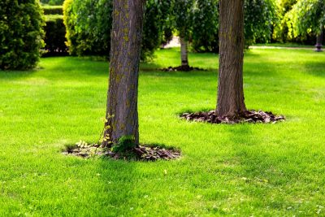

December 18, 2025
How Tree Removal Can Boost Your Home’s Curb Appeal
When it comes to boosting the curb appeal of your home, many people immediately think of landscaping, fresh paint, or perhaps upgrading…
Read More →